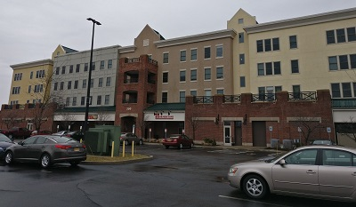

Park Point
Park Point is directly off of RIT's campus. In fact, it might be easy to mistake it as part of RIT campus, especially since the Barnes and Noble has the RIT logo prominiently featured on it. But Park Point is technically considered off-campus. In addition to being an off-campus housing option (albeit expensive one), Park Point also has a small shopping and dining plaza. The centerpiece is obviously the Barnes and Noble that also doubles as the campus bookstore, but the various dining options here are also solid.
Of particular note is Brandani's Pizza, which has the best pizza available in the area, particularly sheet pizzas. Don't let anyone tell you otherwise. Because they work with sheet pizzas mostly, they're great if you're planning some sort of event or club.
The RIT shuttle stops by Park Point, so even without a vehicle Park Point is easily accessible. It's also within walking distance from dorms in the warmer months.